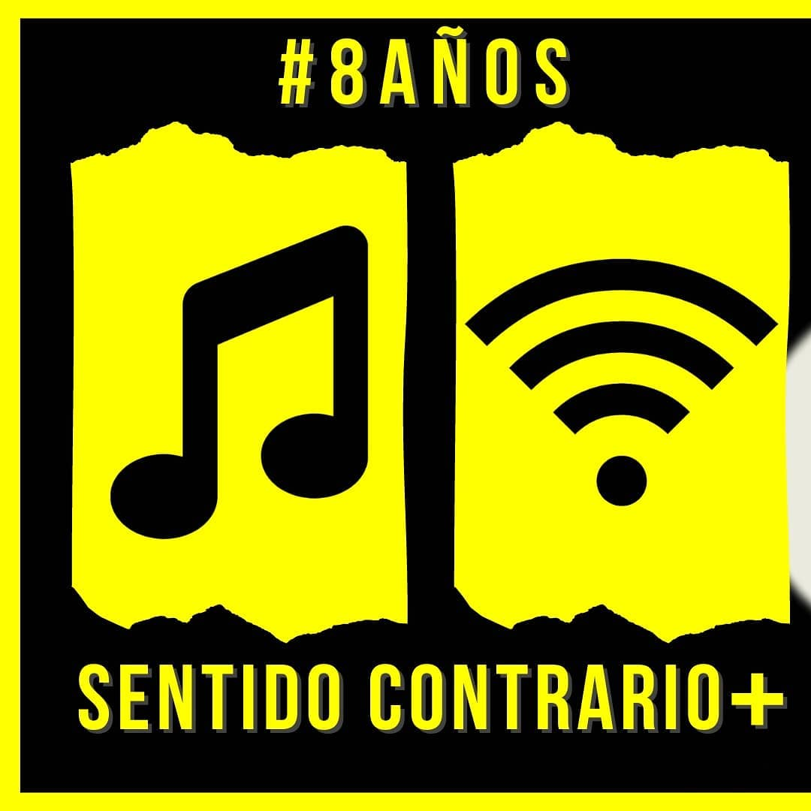
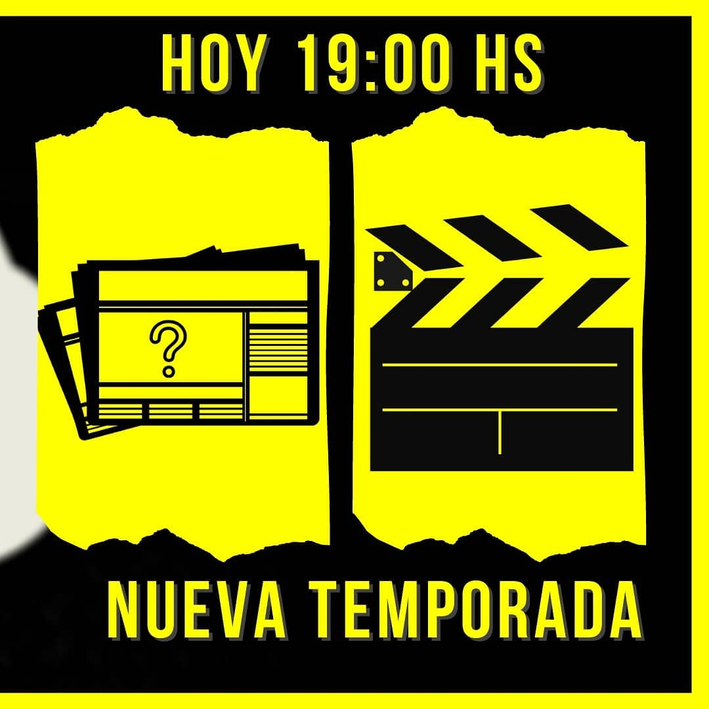
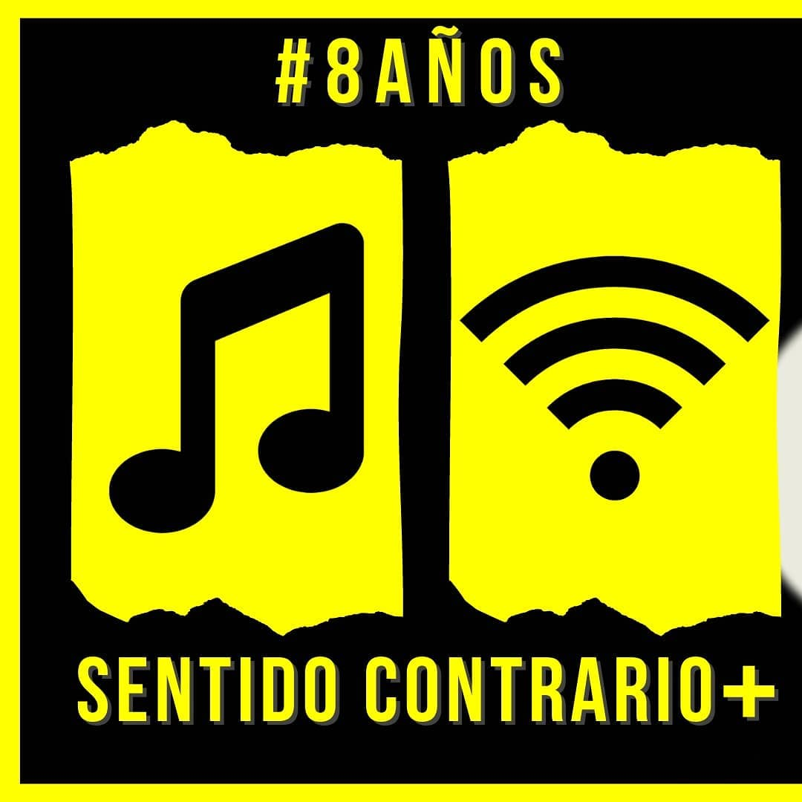
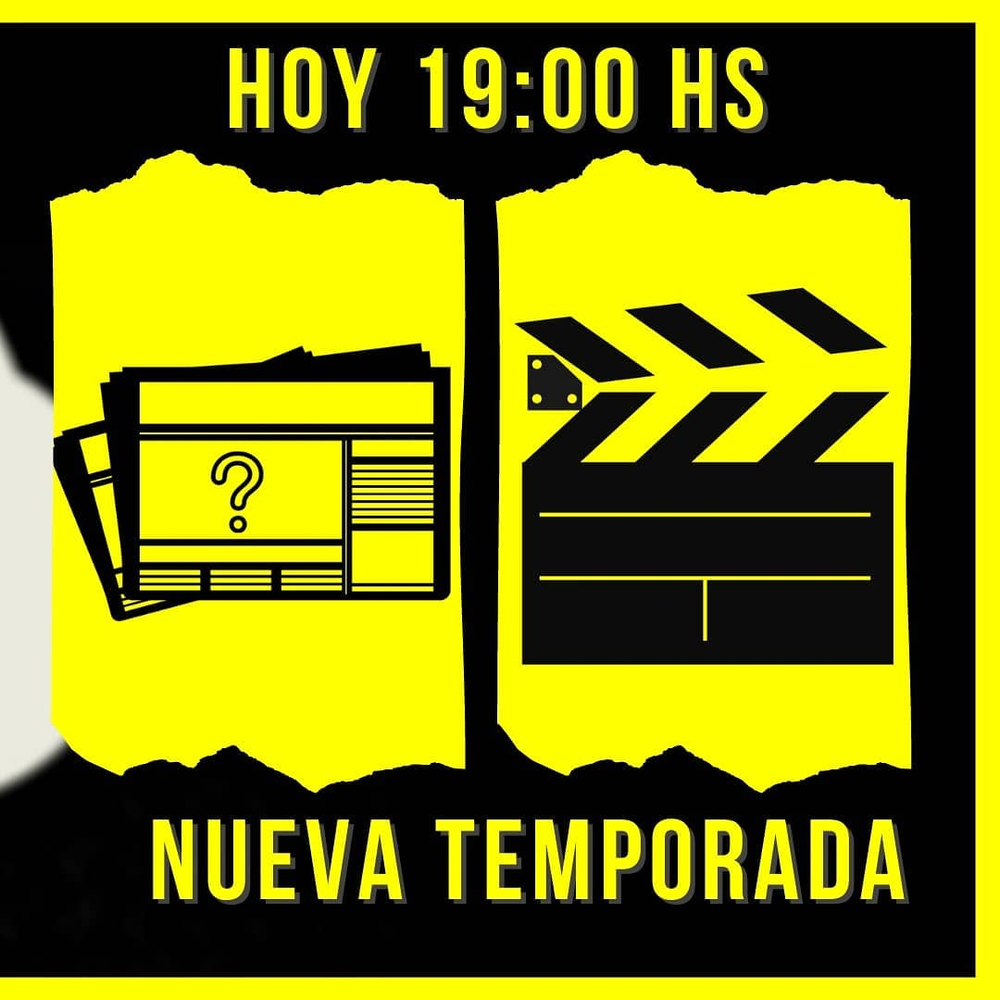

Sobre Nosotros
Somos un equipo de jovenes cristianos, que realizamos un programa de radio. En donde compartimos info, noticias, música y algo de Dios. Podés escucharnos todos los miércoles a las 18:00 Hs en Radio Hope FM 90.3 y en SentidoContrario en Twitch.
Galeria
 


